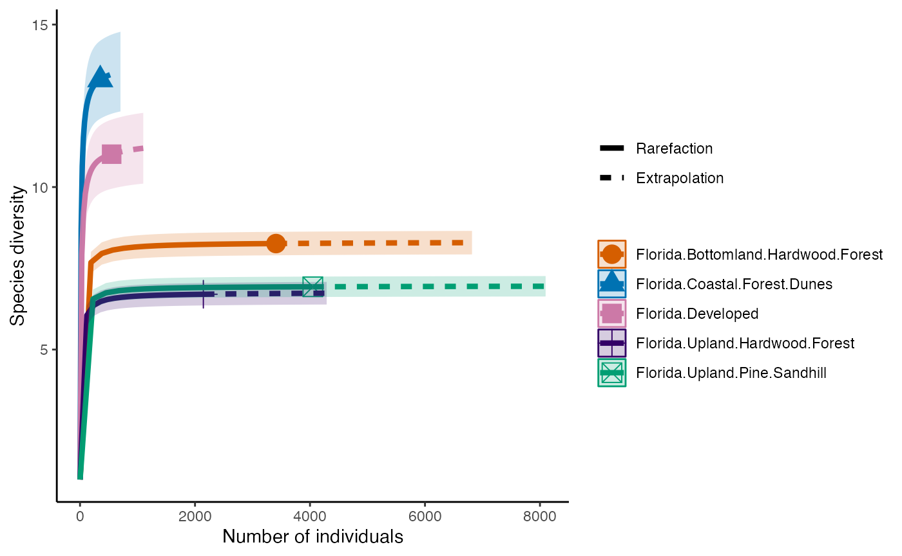

Camera Trap Data Analysis
Teague O’Mara and April Wright
10/22/2020
11_iNEXT.Rmd
knitr::opts_chunk$set(echo = TRUE, error=TRUE, message=FALSE, warning=FALSE)
#Note that this function checks for the packages required for the exercise that are listed in the vector below. If a package is not present, then it will automatically install for the user.
remotes::install_github("r-spatial/mapview")## Downloading GitHub repo r-spatial/mapview@HEAD## wk (0.9.0 -> 0.9.2 ) [CRAN]
## e1071 (1.7-13 -> 1.7-14 ) [CRAN]
## fastmap (1.1.1 -> 1.2.0 ) [CRAN]
## promises (1.2.1 -> 1.3.0 ) [CRAN]
## later (1.3.1 -> 1.3.2 ) [CRAN]
## colorspace (2.1-0 -> 2.1-1 ) [CRAN]
## systemfonts (1.0.5 -> 1.1.0 ) [CRAN]
## munsell (0.5.0 -> 0.5.1 ) [CRAN]
## farver (2.1.1 -> 2.1.2 ) [CRAN]
## htmltools (0.5.6.1 -> 0.5.8.1) [CRAN]
## units (0.8-4 -> 0.8-5 ) [CRAN]
## s2 (1.1.4 -> 1.1.7 ) [CRAN]
## DBI (1.1.3 -> 1.2.3 ) [CRAN]
## terra (1.7-46 -> 1.7-78 ) [CRAN]
## sp (2.1-1 -> 2.1-4 ) [CRAN]
## fs (1.6.3 -> 1.6.4 ) [CRAN]
## sass (0.4.7 -> 0.4.9 ) [CRAN]
## cachem (1.0.8 -> 1.1.0 ) [CRAN]
## tinytex (0.48 -> 0.52 ) [CRAN]
## bslib (0.5.1 -> 0.8.0 ) [CRAN]
## highr (0.10 -> 0.11 ) [CRAN]
## evaluate (0.22 -> 0.24.0 ) [CRAN]
## yaml (2.3.7 -> 2.3.10 ) [CRAN]
## rmarkdown (2.25 -> 2.27 ) [CRAN]
## knitr (1.45 -> 1.48 ) [CRAN]
## xfun (0.40 -> 0.46 ) [CRAN]
## scales (1.2.1 -> 1.3.0 ) [CRAN]
## htmlwidgets (1.6.2 -> 1.6.4 ) [CRAN]
## crosstalk (1.2.0 -> 1.2.1 ) [CRAN]
## sfheaders (0.4.3 -> 0.4.4 ) [CRAN]
## geometries (0.2.3 -> 0.2.4 ) [CRAN]
## httpuv (1.6.12 -> 1.6.15 ) [CRAN]
## uuid (1.1-1 -> 1.2-1 ) [CRAN]
## svglite (2.1.2 -> 2.1.3 ) [CRAN]
## sf (1.0-14 -> 1.0-16 ) [CRAN]
## brew (1.0-8 -> 1.0-10 ) [CRAN]
## leaflet (2.2.1 -> 2.2.2 ) [CRAN]
## servr (0.27 -> 0.30 ) [CRAN]
## satellite (1.0.4 -> 1.0.5 ) [CRAN]## Installing 39 packages: wk, e1071, fastmap, promises, later, colorspace, systemfonts, munsell, farver, htmltools, units, s2, DBI, terra, sp, fs, sass, cachem, tinytex, bslib, highr, evaluate, yaml, rmarkdown, knitr, xfun, scales, htmlwidgets, crosstalk, sfheaders, geometries, httpuv, uuid, svglite, sf, brew, leaflet, servr, satellite## Installing packages into '/private/var/folders/54/9kd8nf1x4fnft0ymvb11qmc80000gn/T/Rtmpie5FUp/temp_libpath3b62461540c7'
## (as 'lib' is unspecified)##
## There are binary versions available but the source versions are later:
## binary source needs_compilation
## wk 0.9.1 0.9.2 TRUE
## fastmap 1.1.1 1.2.0 TRUE
## promises 1.2.1 1.3.0 TRUE
## colorspace 2.1-0 2.1-1 TRUE
## systemfonts 1.0.5 1.1.0 TRUE
## munsell 0.5.0 0.5.1 FALSE
## farver 2.1.1 2.1.2 TRUE
## htmltools 0.5.7 0.5.8.1 TRUE
## s2 1.1.6 1.1.7 TRUE
## DBI 1.2.0 1.2.3 FALSE
## terra 1.7-65 1.7-78 TRUE
## sp 2.1-2 2.1-4 TRUE
## fs 1.6.3 1.6.4 TRUE
## sass 0.4.8 0.4.9 TRUE
## cachem 1.0.8 1.1.0 TRUE
## tinytex 0.49 0.52 FALSE
## bslib 0.6.1 0.8.0 FALSE
## highr 0.10 0.11 FALSE
## evaluate 0.23 0.24.0 FALSE
## yaml 2.3.8 2.3.10 TRUE
## rmarkdown 2.25 2.27 FALSE
## knitr 1.45 1.48 FALSE
## xfun 0.41 0.46 TRUE
## sfheaders 0.4.3 0.4.4 TRUE
## geometries 0.2.3 0.2.4 TRUE
## httpuv 1.6.13 1.6.15 TRUE
## uuid 1.1-1 1.2-1 TRUE
## sf 1.0-15 1.0-16 TRUE
## leaflet 2.2.1 2.2.2 FALSE
## servr 0.28 0.30 FALSE
## satellite 1.0.4 1.0.5 TRUE
##
##
## The downloaded binary packages are in
## /var/folders/54/9kd8nf1x4fnft0ymvb11qmc80000gn/T//Rtmpp2FDB1/downloaded_packages## installing the source packages 'wk', 'fastmap', 'promises', 'colorspace', 'systemfonts', 'munsell', 'farver', 'htmltools', 's2', 'DBI', 'terra', 'sp', 'fs', 'sass', 'cachem', 'tinytex', 'bslib', 'highr', 'evaluate', 'yaml', 'rmarkdown', 'knitr', 'xfun', 'sfheaders', 'geometries', 'httpuv', 'uuid', 'sf', 'leaflet', 'servr', 'satellite'## Warning in i.p(...): installation of package 'terra' had non-zero exit status## Warning in i.p(...): installation of package 'httpuv' had non-zero exit status## Warning in i.p(...): installation of package 'sf' had non-zero exit status## ── R CMD build ─────────────────────────────────────────────────────────────────
## * checking for file ‘/private/var/folders/54/9kd8nf1x4fnft0ymvb11qmc80000gn/T/Rtmpp2FDB1/remotes4c6539575f4f/r-spatial-mapview-78945c5/DESCRIPTION’ ... OK
## * preparing ‘mapview’:
## * checking DESCRIPTION meta-information ... OK
## * checking for LF line-endings in source and make files and shell scripts
## * checking for empty or unneeded directories
## * building ‘mapview_2.11.2.9000.tar.gz’## Installing package into '/private/var/folders/54/9kd8nf1x4fnft0ymvb11qmc80000gn/T/Rtmpie5FUp/temp_libpath3b62461540c7'
## (as 'lib' is unspecified)
using<-function(...) {
libs<-unlist(list(...))
req<-unlist(lapply(libs,require,character.only=TRUE))
need<-libs[req==FALSE]
if(length(need)>0){
install.packages(need)
lapply(need,require,character.only=TRUE)
}
}
packagesInThisExercise <- c("tidyverse", "googlesheets4", "iNEXT", "fields", "sf", "mapview")
using(packagesInThisExercise)## Loading required package: tidyverse## ── Attaching core tidyverse packages ──────────────────────── tidyverse 2.0.0 ──
## ✔ dplyr 1.1.3 ✔ readr 2.1.4
## ✔ forcats 1.0.0 ✔ stringr 1.5.0
## ✔ ggplot2 3.4.4 ✔ tibble 3.2.1
## ✔ lubridate 1.9.3 ✔ tidyr 1.3.0
## ✔ purrr 1.0.2
## ── Conflicts ────────────────────────────────────────── tidyverse_conflicts() ──
## ✖ dplyr::filter() masks stats::filter()
## ✖ dplyr::lag() masks stats::lag()
## ℹ Use the conflicted package (<http://conflicted.r-lib.org/>) to force all conflicts to become errors
## Loading required package: googlesheets4
##
## Loading required package: iNEXT
##
## Loading required package: fields
##
## Loading required package: spam
##
## Spam version 2.9-1 (2022-08-07) is loaded.
## Type 'help( Spam)' or 'demo( spam)' for a short introduction
## and overview of this package.
## Help for individual functions is also obtained by adding the
## suffix '.spam' to the function name, e.g. 'help( chol.spam)'.
##
##
## Attaching package: 'spam'
##
##
## The following objects are masked from 'package:base':
##
## backsolve, forwardsolve
##
##
## Loading required package: viridisLite
##
##
## Try help(fields) to get started.
##
## Loading required package: sf
##
## Linking to GEOS 3.10.2, GDAL 3.4.2, PROJ 8.2.1; sf_use_s2() is TRUE
##
## Loading required package: mapview
##
## Error: package or namespace load failed for 'mapview' in loadNamespace(i, c(lib.loc, .libPaths()), versionCheck = vI[[i]]):
## namespace 'htmltools' 0.5.6.1 is already loaded, but >= 0.5.7 is required
##
## Installing package into '/private/var/folders/54/9kd8nf1x4fnft0ymvb11qmc80000gn/T/Rtmpie5FUp/temp_libpath3b62461540c7'
## (as 'lib' is unspecified)##
## The downloaded binary packages are in
## /var/folders/54/9kd8nf1x4fnft0ymvb11qmc80000gn/T//Rtmpp2FDB1/downloaded_packages## Loading required package: mapview
## Error: package or namespace load failed for 'mapview' in loadNamespace(i, c(lib.loc, .libPaths()), versionCheck = vI[[i]]):
## namespace 'htmltools' 0.5.6.1 is already loaded, but >= 0.5.7 is required## [[1]]
## [1] FALSEMeasuring communities through camera traps
Camera traps are a great way to monitor species & communities. They are minimally invasive & provide a way to see what animals are doing without interfering with them. They can be deployed for long periods of time (our models will run for ~10 months on 1 set of batteries), making them a time and cost effective method for monitoring medium to large sized mammals.
We’ll explore how to organize and interpret data from camera traps by first using some public data downloaded from eMammal that were taken in several habitats in Florida, including Bottomland Hardwood Forest (BLHF). This is the habitat best represented by North Oak Park. We’ll compare the BLHF to other habitats in Florida to get a sense of overall mammal richness, abundance, and diversity.
#Download a Google Sheet of the data. FYI This will take a few minutes.
library(tidyverse)
library(googlesheets4)
gs4_deauth()
cam <- read_sheet("https://docs.google.com/spreadsheets/d/1esrbC-QqoufjlDHXtIYtDcsXovC_x6o6Z4JfBPKvg3s/edit?usp=sharing")Let’s have a quick look at what we have in these data
dim(cam) #Dimensions of cam. How many rows & columns.## [1] 8683 18
names(cam)## [1] "Project" "Subproject"
## [3] "Treatment" "Deployment Name"
## [5] "ID Type" "Deployment ID"
## [7] "Sequence ID" "Begin Time"
## [9] "End Time" "Species Name"
## [11] "Common Name" "Age"
## [13] "Sex" "Individually Identifiable"
## [15] "Count" "Actual Lat"
## [17] "Actual Lon" "Fuzzed"
cam## # A tibble: 8,683 × 18
## Project Subproject Treatment `Deployment Name` `ID Type` `Deployment ID`
## <chr> <chr> <lgl> <chr> <chr> <list>
## 1 Okaloosa S.… Florida B… NA SQ66_Cam393 Research… <dbl [1]>
## 2 Okaloosa S.… Florida B… NA SQ66_Cam393 Research… <dbl [1]>
## 3 Okaloosa S.… Florida B… NA SQ66_Cam393 Research… <dbl [1]>
## 4 Okaloosa S.… Florida B… NA SQ66_Cam393 Research… <dbl [1]>
## 5 Okaloosa S.… Florida U… NA SQ122_Cam279 Research… <dbl [1]>
## 6 Okaloosa S.… Florida U… NA SQ122_Cam279 Research… <dbl [1]>
## 7 Okaloosa S.… Florida U… NA SQ122_Cam279 Research… <dbl [1]>
## 8 Okaloosa S.… Florida U… NA SQ122_Cam279 Research… <dbl [1]>
## 9 Okaloosa S.… Florida U… NA SQ122_Cam279 Research… <dbl [1]>
## 10 Okaloosa S.… Florida U… NA SQ122_Cam279 Research… <dbl [1]>
## # ℹ 8,673 more rows
## # ℹ 12 more variables: `Sequence ID` <chr>, `Begin Time` <list>,
## # `End Time` <list>, `Species Name` <chr>, `Common Name` <chr>, Age <chr>,
## # Sex <chr>, `Individually Identifiable` <chr>, Count <dbl>,
## # `Actual Lat` <dbl>, `Actual Lon` <dbl>, Fuzzed <lgl>There are a lot of column names that have spaces in them. This is fine for the tidyverse tibble that the data currently occupy, but R hates spaces, and are a pain for typing out since they would need quotes around them all of the time. We’ll change the column names into something that is easier to use later. We’ll also clean up the names of the Subprojects.
names(cam) <- make.names(names(cam), unique = TRUE) #create good names without spaces
#We need to clean up names and get rid of spaces. These search for spaces in the given column names and replace them with periods
cam$Species.Name <- str_replace_all(cam$Species.Name, " ", ".")
cam$Common.Name <- str_replace_all(cam$Common.Name, " ", ".")
cam$Subproject <- str_replace_all(cam$Subproject, " ", ".")
cam$Subproject <- str_replace_all(cam$Subproject, "/", ".") #there is one subproject name that has a /. Let's just change it to a period for consistency's sake.I want to start summarizing some of the data into counts of each
species type per subproject (or forest type). I only need a few of the
columns, so I’m going to select those first so that I can count up the
number of species found in each subproject. This will give a table with
species as rows and Subprojects as columns. I have set it up this way
because the package that we’ll use to analyze diversity
iNEXT requires this format.
speciesCount <- cam %>%
select(Common.Name, Count, Subproject) %>%
group_by(Common.Name, Subproject) %>% #Here I group the data by species and the subproject
summarize(totalCount = sum(Count)) %>% #This now gives the sum of the count of each species per subproject
spread(Subproject, totalCount) #Now I need to change the orientation so that species are rows and subprojects are columns. This pivots the table to do that. More explanation here: https://rpubs.com/bradleyboehmke/data_wrangling
speciesCount## # A tibble: 40 × 6
## # Groups: Common.Name [40]
## Common.Name Florida.Bottomland.H…¹ Florida.Coastal.Fore…² Florida.Developed
## <chr> <dbl> <dbl> <dbl>
## 1 American.Bla… 30 NA 1
## 2 Animal.Not.o… NA 2 NA
## 3 Bobcat 20 8 1
## 4 Calibration.… 10 2 NA
## 5 Camera.Misfi… 418 1 NA
## 6 Camera.Trapp… 402 52 29
## 7 Coyote 44 31 8
## 8 Domestic.Cat NA 22 18
## 9 Domestic.Dog 11 12 37
## 10 Domestic.Hor… 1 NA NA
## # ℹ 30 more rows
## # ℹ abbreviated names: ¹Florida.Bottomland.Hardwood.Forest,
## # ²Florida.Coastal.Forest.Dunes
## # ℹ 2 more variables: Florida.Upland.Hardwood.Forest <dbl>,
## # Florida.Upland.Pine.Sandhill <dbl>This now tells us how many times each species appeared on a photo sequence in each location. In our study of North Oak Park, you could substitute camera for subproject to see counts per camera location.
Richness, Abundance, & Diversity
There are a few ways to think about communities of species and their composition. Richness is just the number of species that are present at site. This is an easy one – we can just count those up. Abundance is the number of individuals of each species in a site. This takes a bit to calculate. Diversity is a combination of richness & abundance. It can be calculated in a few different ways, but defines the different number of species in an area (richness) and its abundance and the distribution of these species in that ecosystem. It’s a measure of the variety in the ecosystem.
Diversty in an ecological community can tell you a lot about what kind of community it is. Does it have a lot of different kinds of opportunities & ecological niches? Are there many types of feeding and resting habitats available?
In this exercise we’ll calculate different diversity metrics to
understand how mammal communities can change. We’ll use the package
iNEXT to do this. This program calculates Hill numbers that
allow us to compare communities of different sizes. Hill numbers are the
effective number of species and can be a direct reflection of
older diversity metrics, but are a better measure of diversity because
the non-linearity of other diversity indices (like the Shannon Diversity
Index), makes it difficult to really interpret the values across many
studies. Hill numbers are more straight-forward. A nice set of examples
and discussion here: https://jonlefcheck.net/2012/10/23/diversity-as-effective-numbers/.
Abundance
First, we’ll calculate simple Abundance for each Subproject / Forest Type
abundance <- cam %>%
group_by(Subproject) %>%
filter(!is.na(Species.Name)) %>% #filter out any NAs in the species name, just in case
summarize(SpeciesAbundance = length(unique(Species.Name)))
abundance## # A tibble: 5 × 2
## Subproject SpeciesAbundance
## <chr> <int>
## 1 Florida.Bottomland.Hardwood.Forest 33
## 2 Florida.Coastal.Forest.Dunes 20
## 3 Florida.Developed 25
## 4 Florida.Upland.Hardwood.Forest 29
## 5 Florida.Upland.Pine.Sandhill 28We can see that each of the forests has 20 - 30 (ish) species, but we
have no idea about the diversity, evenness, or overlap among those
species. For all we know those data sets could be made of 97%
white-tailed deer and 1 photo sequence each of another 18 - 32 mammal
species. We can turn to iNext to figure some of this out.
FYI, there are supposed to be 80 terrestrial mammal species in all of
Florida, including bats & rodents that camera traps most likely
wouldn’t capture.
To make our data play nicely with iNEXT, it needs to be
transformed slightly. This is done below.
speciesCount[is.na(speciesCount)]=0 #This turns the NAs that come from summing 0's into real 0's for analysis
camDiv <- as.data.frame(speciesCount) #Since iNext wants a data frame, turn the tibble into one
rownames(camDiv) <- camDiv$Common.Name #iNext also wants the species ID as row names.
camDiv <- camDiv[2:6] #Now we can get rid of the species name since it's already in our row name.Now that the data are in a format iNEXT likes, we can
calculate species Richness. Because our data are
counts, the data type is abundance. Hill numbers are calculated as:
\[^{q}D =
(\sum_{i=1}^{S}p_{i})^{1/(1-q)}\]
Where: S is the number of species in the assemblage and each i species has the relative abundance \(p_{i}\). By changing the exponent q we change how sensitive the equation is to relative frequencies and therefore the shape of the distribution and what it represents. q = 0 is Richness, q = 1 is the Shannon Diversity index, and q = 2 is the Simpson’s Diversity index. More on those below.
Richness
So, we can calculate species Richness and then plot richness for each forest.
richness <- iNEXT(camDiv, q=0, datatype = "abundance") #This calculates hill numbers for the number of observations we have. q changes the expected relationship. 0 will give Richness
ggiNEXT(richness)+
theme(legend.position = "right")+
theme_classic()
Diversity
The first diversity index that Hill numbers calculate is equivalent to the Shannon Diversity Index. This counts all species equally, so diversity is calculated in proportion to its abundance.
diversity_Shan <- iNEXT(camDiv, q=1, datatype = "abundance") #This calculates hill numbers for the number of observations we have. q changes the expected relationship. q=1 gives the Shannon Diversity index.
ggiNEXT(diversity_Shan)+
theme(legend.position = "right")+
theme_classic()
The next diversity index is Simpson’s Diversity Index. This discounts all but the most common species.
diversity_Simps <- iNEXT(camDiv, q=2, datatype = "abundance") #This calculates hill numbers for the number of observations we have. q changes the expected relationship. q=2 gives the Simpsons Diversity index.
ggiNEXT(diversity_Simps)+
theme(legend.position = "right")+
theme_classic()
These can also all be run at the same time and we can look at the effects of each diversity calculation (q) within each site
allDiversity <- iNEXT(camDiv, q=c(0, 1, 2), datatype="abundance", endpoint=7000)
ggiNEXT(allDiversity, type=1, facet.var="site")+
theme_classic()## Error in ggiNEXT.iNEXT(allDiversity, type = 1, facet.var = "site"): invalid facet variableQuestions
- Which habitats have the largest number of species?
- What do you notice about the differences between the Shannon
(q=1) & Simpson’s (1=2) Diversity indices? Is
their relationship (e.g., distance between them) consistent across
sites?
- Are abundance, richness, and diversity closely related to each other
in these systems? Are habitats with the highest abundances the most
diverse? Why or why not?
###Plotting our data in space These are data that were collected in a spatial context, so why not make a map? We have the latitude & longitude of each camera, so they can be plotted and colored by their habitat typel
#Let’s plot by deployments location and total number of species
ggplot(cam, aes(x=Actual.Lon, y=Actual.Lat, color = Subproject))+
geom_point()+
theme_bw() Question 4. Are these habitats spread out or clustered
together? Do you think this has any impact on the diversity
measures?
Question 4. Are these habitats spread out or clustered
together? Do you think this has any impact on the diversity
measures?
We can also plot the location of each camera scaled by the number of
animals observed at that spot and colored by the habitat. We need to do
a bit of summarizing first.
deployCount <- cam %>% dplyr::select(Common.Name, Count, Deployment.ID, Actual.Lon, Actual.Lat, Subproject) %>%
group_by(Deployment.ID, Actual.Lon, Actual.Lat, Subproject) %>%
summarize(totalCount = sum(Count))
ggplot(deployCount)+
geom_point(aes(x=Actual.Lon, y=Actual.Lat, size=totalCount, color=Subproject), alpha=0.5)+
theme_bw()
Lastly, we can plot those data in a zoomable, interactive map
## Error: package or namespace load failed for 'mapview' in loadNamespace(i, c(lib.loc, .libPaths()), versionCheck = vI[[i]]):
## namespace 'htmltools' 0.5.6.1 is already loaded, but >= 0.5.7 is required
#Transform these objects into something that can be plotted with the package {sf}
deployCount_sf <- deployCount %>% st_as_sf(coords = c("Actual.Lon", "Actual.Lat"), crs=4326)
camMap <- mapview(deployCount_sf, zcol="Subproject", cex="totalCount", layer.name = "Habitat Type")## Error in mapview(deployCount_sf, zcol = "Subproject", cex = "totalCount", : could not find function "mapview"
camMap## Error in eval(expr, envir, enclos): object 'camMap' not foundNMDS
A better way to look at these data rather than a simple plot might be the non-metric multidimensional scaling (NMDS). NMDS is used for situations with many dimensions of variation. We can make univariate comparsions between populations easily. In fact, you just saw this - most of our diversity indices collapse all the information associated with diversity into a single value.
We might be interested, however, in how community compositions themselves change. This inherently involves looking at more data and more variables, and involves what we might call ‘multivariate comparisons’. By their nature, these are more complex comparisons, but there are some tools for making these comparisons that aren’t too unituitive.
NMDS is one such technique. We can compute raw abundances for our data. We can also rank which species are the most abundant per community. Doing so has the effect of making the NMDS more robust to missing data. NMDS also does not assume a Euclidean distance (as PCA might), making it flexible to different kinds of dissimilarity metrics between populations.
What we’ll be doing in this lesson is using our data from the previous steps to construct an NMDS plot. Broadly, this will involve defining where communities sit in composition space by themselves and in relation to one another, and then quantifying the goodness of fit of the model to the data (stress).
One of the most famous packages for doing this is
vegan.
Vegan takes community compositions as a matrix. We can modify our command from earlier. Vegan will expect the species names to be the columns and the site to be the row:
speciesCount <- cam %>%
select(Common.Name, Count, Subproject) %>%
group_by(Common.Name, Subproject) %>% #Here I group the data by species and the subproject
summarize(totalCount = sum(Count)) %>% #This now gives the sum of the count of each species per subproject
spread(Common.Name, totalCount, fill = 0)
speciesMatrix <- data.matrix(speciesCount, rownames.force = unique(cam$Subproject))Next, we perform the NMDS:
cam_trap_NMDS <- metaMDS(speciesMatrix)## Square root transformation
## Wisconsin double standardization
## Run 0 stress 0
## Run 1 stress 0
## ... Procrustes: rmse 0.1122361 max resid 0.1709211
## Run 2 stress 0
## ... Procrustes: rmse 0.07444285 max resid 0.08249458
## Run 3 stress 0
## ... Procrustes: rmse 0.1218095 max resid 0.1558595
## Run 4 stress 9.999863e-05
## ... Procrustes: rmse 0.02932956 max resid 0.04265066
## Run 5 stress 0.1859594
## Run 6 stress 8.010416e-05
## ... Procrustes: rmse 0.1127147 max resid 0.1574426
## Run 7 stress 7.688356e-05
## ... Procrustes: rmse 0.1067923 max resid 0.168388
## Run 8 stress 0.1573461
## Run 9 stress 9.467136e-05
## ... Procrustes: rmse 0.129562 max resid 0.1774468
## Run 10 stress 0
## ... Procrustes: rmse 0.05607449 max resid 0.06467418
## Run 11 stress 8.853772e-05
## ... Procrustes: rmse 0.1301699 max resid 0.1785759
## Run 12 stress 0.2582026
## Run 13 stress 8.713315e-05
## ... Procrustes: rmse 0.1192792 max resid 0.1541592
## Run 14 stress 0
## ... Procrustes: rmse 0.149973 max resid 0.2302017
## Run 15 stress 0
## ... Procrustes: rmse 0.1256767 max resid 0.1557277
## Run 16 stress 0.1573461
## Run 17 stress 9.396092e-05
## ... Procrustes: rmse 0.0553297 max resid 0.08147343
## Run 18 stress 0.1573461
## Run 19 stress 0
## ... Procrustes: rmse 0.04569697 max resid 0.05501658
## Run 20 stress 0
## ... Procrustes: rmse 0.04996614 max resid 0.05911155
## *** Best solution was not repeated -- monoMDS stopping criteria:
## 15: stress < smin
## 2: stress ratio > sratmax
## 3: scale factor of the gradient < sfgrminYou will notice this tells us some output. The first is that the differences between communities is calculated by the Bray-Curtis distance. This is a popular distance because it is not affected by changes in unit, it isn’t affected if one species is present or absent in one community, it can scale to multiple populations, and it can react to differences in raw abunances even if relative abundance change. It looks like this:
{BC_{ij}=1-{}}
In which C is the sum of the least common species abundance in populations i and j. For example, if each population has two species, the less abundant count would be summed for both populations. \(S_i\) is the number of individuals in population 1 and \(S_j\) is this quantity for population 2. If, in our two populations there are 10 robins and 5 cardinals in population one, and 5 robins and 8 cardinals in population 2, this will be
{BC_{ij}=1-{}}
Next, you will note that the calculation tells us there is no stress associated with our calculation, and that this is a bad thing. You might think no stress is a good thing. But actually, when we go from three-dimensional data to two dimensional data, we lose information. Think about going from a globe to a map.
If we have no stress, that means there is no loss of information. This indicates we probably don’t have much information in the data. We can view this on a plot.
stressplot(cam_trap_NMDS) Here, all of our points (blue circles) are right on the red line. Our
\(R^2\) is very high, indicating good
fit. So we can fit the model, but there’s little information in it - we
might not have widely generalizeable results from these data.
Here, all of our points (blue circles) are right on the red line. Our
\(R^2\) is very high, indicating good
fit. So we can fit the model, but there’s little information in it - we
might not have widely generalizeable results from these data.
ordiplot(cam_trap_NMDS,type="n")
orditorp(cam_trap_NMDS,display="species",col="red",air=0.01)
orditorp(cam_trap_NMDS,display="sites",cex=1.25,air=0.01) Oh, that’s hideous. What this is showing us is similarity between
populations - the closer together they are, the more similar the species
compositions. The species that characterize these communities is printed
in red, but it is hard to see.
Oh, that’s hideous. What this is showing us is similarity between
populations - the closer together they are, the more similar the species
compositions. The species that characterize these communities is printed
in red, but it is hard to see.
cols <- c('red', 'black', 'blue', 'green', 'orange')
groups <- seq(length(speciesCount$Subproject))
ordiplot(cam_trap_NMDS,type="text")
orditorp(cam_trap_NMDS,display="sites",cex=1.25,air=0.01)
text(cam_trap_NMDS, display = 'sites')
We can also do something a bit nicer. In this case, we take our points and export them to ggplot to make a figure.
data.scores = as.data.frame(scores(cam_trap_NMDS)$sites)
names <- data.scores %>%
mutate(Location = speciesCount$Subproject)
plot <- ggplot(names, aes(x = NMDS1, y = NMDS2)) +
geom_point(size = 4, aes(colour = Location))
plot
Exploration
Now it’s your turn
Here is a link to last year’s camera data from North Oak Park
nop <- cam <- read_sheet("https://docs.google.com/spreadsheets/d/18yhZcaiYt6llg84eZYrNEewuLP3xaEyxYQQN__RQ3_4/edit?usp=sharing")Using these data, copy and modify whatever code you need from above (or from the past assignments) to accomplish the following tasks. Make sure you show the code that will output the correct answers and provide any interpretation that’s needed.
- Which cameras captured the most deer? Show me on a ggplot. To do this you will need to calculate the sum for each species per camera (think grouping), then filter these for deer only. Then plot these data using ggplot with the camera locations on the x-axis (longitude) and y-axis (latitude), and scale the size or color by the number of deer captured.
6. Where was the highest diversity, measured by the Shannon’s Diversity Index, in the forest? Show me on a map with ggplot.
7. What do you see from the map of diversity at each camera site? Are there any patterns? FYI, the site locations are the same (but their names are different).8. What other kinds of information would you want to know to understand the forest dynamics a bit more and its relationship with its surroundings?